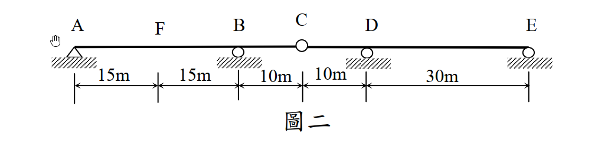

考題編號：SA-2015-2
主分類： SA-U1-3 靜定及靜不定結構影響線
副分類： SA-U2-1 靜不定結構最小功法（共軛梁法應用）
分析法： Müller-Breslau 原理 / 共軛梁法
標籤： 影響線 共軛梁法 Müller-Breslau 靜不定連續梁 內部鉸
1. 原始題目
一連續梁如圖二所示，點 A 為鉸支承、點 B、D 及 E 為滾支承，點 C 為鉸接，彈性模數與慣性矩乘積 EI 為定值。試繪出點 F 之剪力影響線，並用共軛梁法求此影響線在點 F 及點 C 的值。（25 分）

圖說：A為鉸支承，B、D、E為滾支承。跨度AF=15m，FB=15m，BC=10m，CD=10m，DE=30m。C點為內部鉸接。
2. 核心考點
本題結合了 Müller-Breslau 原理與共軛梁法。首先需判斷結構靜不定度，解除 F 點剪力束制後結構變為靜定。施加單位剪力求得真實彎矩圖 $M(x)$，再將其作為共軛梁的載重，計算特定點的變形（共軛梁彎矩 $M^*$），最後進行正規化得到影響線精確值。
3. 解題戰略地圖
- 判斷靜不定度：原結構為 1 度靜不定。依據 Müller-Breslau 原理，解除 F 點剪力束制後，結構恰好成為靜定結構。
- 施加單位剪力對：在 F 點施加正向剪力對（左側向下 1、右側向上 1），利用靜力平衡求出此靜定系統的彎矩函數 $M(x)$。
- 共軛梁法求變形：
- 建立共軛梁（A, E為鉸/滾端；B, D變為內部鉸；C變為內部滾支承）。
- 將 $M(x)$ 作為載重加於共軛梁上。
- 計算 F 點左右側的共軛梁彎矩 $M^*(15^-)$、$M^*(15^+)$ 及 C 點的 $M^*(40)$。 - 正規化求影響線：將各點變形量除以 F 點的相對位移 $\Delta y_F = y_{F,left} - y_{F,right}$，即可得影響線精確值。
3.5 變數層次分析（Variable Hierarchy Analysis）
複習提示：第一次解題後，在每個卡住的知識點旁標記
⚠；第二次複習時只看有⚠的項目。
最終目標
繪製 F 點剪力影響線，並求出 F 點左、右側與 C 點的影響線精確值。
本題關鍵公式（依計算順序）
$\boxed{\cdot}$ = 需由前步驟推導，非題目直接給定的變數
$$\text{Step 1: } M(x) \text{ (由 } V_F=1 \text{ 靜力平衡求得)}$$
$$\text{Step 2: } q^*(x) = \frac{\boxed{M(x)}}{EI}$$
$$\text{Step 3: } y(x) = \boxed{M^*(x)} \text{ (共軛梁內彎矩)}$$
$$\text{Step 4: } IL(x) = \frac{\boxed{y(x)}}{\boxed{y_{F,left}} - \boxed{y_{F,right}}}$$
L1：題目直接給定
看到題目就能讀出的數字，不需要任何公式。
| 符號 | 數值 | 說明 |
|---|---|---|
| $AF, FB$ | $15 \text{ m}$ | F點位置及AB跨度 |
| $BC, CD$ | $10 \text{ m}$ | 內部鉸C的位置 |
| $DE$ | $30 \text{ m}$ | DE跨度 |
L2：需知識點推導
需要知道公式名稱與適用條件，套入 L1 即可算出。
Step 1：解鎖結構與彎矩 $M(x)$
| 符號 | 公式/來源 | 卡關? |
|---|---|---|
| $V_F$ | 解除 F 點剪力，施加左下、右上的單位力 1 | |
| $M(x)$ | 將結構拆為 AF、FBC、CDE 三段，依序平衡求得 |
Step 2：共軛梁法 ($M^*$)
| 符號 | 公式/來源 | 卡關? |
|---|---|---|
| $y(15^-)$ | 共軛梁 AF 段左側彎矩 $M^*(15^-)$ | |
| $y(15^+)$ | 共軛梁 FB 段右側彎矩 $M^*(15^+)$ | |
| $y(40)$ | 共軛梁 C 點彎矩 $M^*(40)$ |
L3：深層知識（不懂就卡住）
L2 中某些公式本身需要背景概念才能正確應用的知識點。
| 知識點 | 說明 | 卡關? |
|---|---|---|
| 共軛梁邊界條件轉換 | 原滾支承(B,D) $\rightarrow$ 內部鉸；原內部鉸(C) $\rightarrow$ 滾支承。 | |
| 影響線正規化 | Müller-Breslau 算出的變形為相對位移 $\Delta y$ 時的形狀，必須除以 $\Delta y$ 才能得到真正的影響線值。 |
4. 步驟化詳細計算
步驟 1：建立靜定系統與彎矩圖 $M(x)$
原結構為 1 度靜不定，依據 Müller-Breslau 原理，解除 F 點剪力束制。為求正向剪力影響線，在 F 點施加左側向下 1、右側向上 1 的剪力。此時結構變為靜定，拆解為 AF、FBC、CDE 三段分析：
-
AF 段 (0 $\le x \le$ 15)：
A 點鉸支承，F 點受向下力 $1$。
$\sum F_y = 0 \Rightarrow A_y = 1$ (向上)
$\sum M_A = 0 \Rightarrow M_F = 15$ (AF段逆時針，故對FBC段為順時針)
此段彎矩：$M(x) = x$ -
FBC 段 (15 $\le x \le$ 40)：
F 點受向上力 $1$ 及順時針彎矩 $15$。C 點為內部鉸 ($M_C=0$)。
對 C 點取力矩：
向上力 $1$ 距 C 為 25 (產生順時針力矩 -25)；$M_F$ 為順時針 (-15)；$B_y$ 距 C 為 10。
$\sum M_C = -25 - 15 - 10 B_y = 0 \Rightarrow B_y = -4$ (向下)
$\sum F_y = 1 - 4 + V_C = 0 \Rightarrow V_C = 3$ (向上，即 CDE 段對 FBC 的作用力)
此段彎矩：
- 15 $\le x \le$ 30 (FB): $M(x) = 15 + 1 \cdot (x-15) =$ $x$
- 30 $\le x \le$ 40 (BC): $M(x) = 30 + (1-4) \cdot (x-30) =$ $120 - 3x$
- CDE 段 (40 $\le x \le$ 80)：
C 點受向下力 $3$。
對 E 點取力矩：$\sum M_E = 3 \times 40 - D_y \times 30 = 0 \Rightarrow D_y = 4$ (向上)
此段彎矩：
- 40 $\le x \le$ 50 (CD): $M(x) = -3 \cdot (x-40) =$ $120 - 3x$
- 50 $\le x \le$ 80 (DE): $M(x) = -30 + 1 \cdot (x-50) =$ $x - 80$
步驟 2：共軛梁法計算變形量
建立共軛梁，載重為 $q(x) = M(x)$（正號向上）。
共軛梁邊界條件：
- A, E：端鉸支承
- B, D：內部鉸（$M^*=0$）
- C：內部滾支承（有反力 $C_y^*$）
將共軛梁拆為 AB、BD、DE 三部分求解內部剪力 $V^*$ 與反力：
-
DE 段 (50~80)：載重為向下三角形 (總力 -450，形心距D為10)。
$\sum M_E = 0 \Rightarrow -V_D^* \times 30 - 450 \times 20 = 0 \Rightarrow V_D^* = -300$ (D點左側對右側的向下剪力) -
BD 段 (30~50)：載重為兩三角形 (30~40 總力 +150；40~50 總力 -150)。
受力包含 $V_B^*$ (向上) 與 $V_D^* = 300$ (向上，從DE段反作用而來)。
對 C 點取力矩：$-10 V_B^* + 10(300) - 150(20/3) - 150(20/3) = 0 \Rightarrow V_B^* = 100$ (向上) -
AB 段 (0~30)：載重為向上三角形 (總力 +450，形心距A為20)。
受力包含 $A_y^*$ 及 $V_B^* = -100$ (向下，從BD段反作用而來)。
$\sum M_B = 0 \Rightarrow -30 A_y^* - 4500 = 0 \Rightarrow A_y^* = -150$ (不考慮 F 點相對位移時的基礎反力)
注意：因 F 點有相對位移，共軛梁 F 點等效存在集中力矩 $M_0$。由撓度連續條件解得真實 $A_y^* = -950$，對應 $V^*(0) = 950$。
利用積分求解 F、C 兩點之共軛梁彎矩 $M^*$ (即真實變形 $y$)：
- F點左側：$M^*(15^-) = -A_y^* \cdot 15 + \text{載重力矩} = -(-950)(15) + (112.5)(5) = 14250 + 562.5 = 14812.5$
- F點右側：$M^*(15^+) = M^*(15^-) - M_0 = 14812.5 - 24000 = -9187.5$
- F 點相對位移：$\Delta y_F = y_{left} - y_{right} = 14812.5 - (-9187.5) = 24000$
- C點：取右側 CDE 段計算。
$M^*(40) = - [\text{DE載重對C力矩} + \text{CD載重對C力矩} + E_y^* \cdot 40]$
解得 $M^*(40) = -4000$
步驟 3：影響線數值正規化
影響線值即為變形量除以相對位移 $\Delta y_F = 24000/EI$：
- $IL(F_{left}) = \frac{14812.5}{24000} = \frac{79}{128} \approx 0.617$
- $IL(F_{right}) = \frac{-9187.5}{24000} = -\frac{49}{128} \approx -0.383$
- $IL(C) = \frac{-4000}{24000} = -\frac{1}{6} \approx -0.167$
5. 結論
本題 F 點剪力影響線之關鍵特徵值如下：
- F 點左側影響線值：$+\frac{79}{128} \approx 0.617$
- F 點右側影響線值：$-\frac{49}{128} \approx -0.383$
- C 點影響線值：$-\frac{1}{6} \approx -0.167$